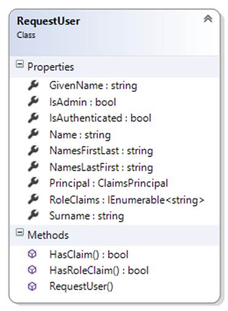

INT422 – Week 9 Lecture Notes
Some useful security-related topics. Rich text editing.
Test today
Test 8 is today, at the beginning of the timeslot, and will run approximately 18 minutes.
Textbook coverage
As previously announced, the textbook will have a supporting role as you learn new topics from these notes and your classroom sessions. Use the table-of-contents and the index to locate the topic, and then read about it there. A reminder: The textbook does not use view model classes in its discussions and code examples. We do.
Assignment 8 progress
Be prepared to ask questions about Assignment 8, if you have any.
Code examples
Conditional Menus
Manage User Accounts
Personal Notes
Theme for this week
We will cover some useful security-related topics that will help you build better web apps.
We start with a general user interface topic – menu-building – and then move on to security topics.
Dropdown menu overview
We start with this topic, because we use it again soon, when we discuss security topics.
The Bootstrap framework enables you to predictably and easily create a dropdown menu. The technique is fully described in the Bootstrap documentation on “Dropdowns“.
Here’s a summary:
- The menu choices in the dropdown are implemented as a nested unordered list
- The top-level <li> uses a specific CSS class, and its content is an <a> that has specific attributes
- The nested <ul> uses a specific CSS class
- Its links can be generated by the ActionLink HTML Helper, or by normal <a> elements
Here’s the code for a typical implementation:
|
<div class="navbar-collapse collapse"> <ul class="nav navbar-nav"> <li>@Html.ActionLink("Home", "Index", "Home")</li>
<li class="dropdown"> <a href="#" class="dropdown-toggle" data-toggle="dropdown">Dropdown for all users <b class="caret"></b></a> <ul class="dropdown-menu"> <li><a href="#">Achieve world peace</a></li> <li><a href="#">Cure cancer</a></li> <li><a href="#">Solve the hunger problem</a></li> </ul> </li> |
Here’s what it looks like as an image from the code editor. Click the image to open it full-size in a new tab/window.

Here’s how the menu is rendered, showing the new “Dropdown…” menu:
Here’s what it looks like when the “Dropdown…” menu item is clicked:
Security topics that will get some love today
There’s a range of security topics that we’ll touch on today.
Some you can use immediately, including:
- A way to easily expose information about the current authenticated user
- Conditional menus
- User account management
Some topics you can use soon, including:
- Admin approval of a “register” request (the workflow)
- Custom claim, and custom authorize attribute
And some advanced topics can be used in the near future, in another assignment, including:
- Mixing user account concepts with real people (e.g. employees, customers)
- Register new account works only for specific people
- Restrict editing tasks to the owner of an object (in the data store)
Expose information about the current authenticated user –
RequestUser class, and usage in the Manager class and elsewhere

While studying this section, open the ConditionalMenus code example.
Open the Manager.cs source code file. Near the bottom, it has a new class named RequestUser.
This class will make it far easier to expose often-used data in a user account. Sometimes you need the data to make a decision (e.g. does the user have the “Admin” role claim?), and sometimes you need the data for the user interface (e.g. the given name(s) and surname).
Again, this class just makes it easier to get to often-used data. It is a convenience class.
In the Manager constructor, it creates one of these RequestUser objects, and exposes it as a public property.
As the code comments state, you can use this property in the Manager class methods to control logic and flow, and to use its data/string content.
You can also use this property in a controller. For example:
var userName = m.User.Name;
You can also use this property in a view. For best results, near the top of the view (inside the typically existing @ { } code block), add this statement:
var userAccount = new <your-project-name>.Controllers.RequestUser
(User as System.Security.Claims.ClaimsPrincipal);
Conditional menu items (and dropdowns)
As you know, the _Layout.cshtml asset is used to render the default layout for views in your app.
It includes a menu. The Bootstrap framework defines its appearance and behaviour.
We can add conditional menu choices to this menu. What condition? Anything you can imagine.
A popular condition is “security”. In other words, if a user is authenticated, or authenticated and has a specific role claim, you may want to show one or more menu items.
Above, you just learned about the new RequestUser object that you can configure in a view.
Its properties (and methods) can be used to make decisions about what to render, and its appearance.
For example, you can render a menu item if the request is authenticated. You can use Request.IsAuthenticated, or userAccount.IsAuthenticated. Either one is acceptable.
@if (Request.IsAuthenticated)
{
<li>@Html.ActionLink("Account info", "Home", "Index")</li>
}
You can also render a menu item (or a full dropdown menu) if the authenticated user has the “Admin” role claim.
@if (userAccount.IsAdmin)
{
<li class="dropdown">
<a href="#" class="dropdown-toggle" data-toggle="dropdown">Admin tasks <b class="caret"></b></a>
<ul class="dropdown-menu">
<li><a href="#">List of all users</a></li>
<li><a href="#">Find user by name</a></li>
<li><a href="#">Edit user info and claims</a></li>
</ul>
</li> }
}
Finally, you can render a menu item based on any other logic or condition. You can even render strings from the RequestUser object in the menu itself.
@if (userAccount.HasRoleClaim("RoleOne"))
{
<li>@Html.ActionLink(userAccount.GivenName + " task", "Home", "Index")</li>
}
Here’s an image from the code editor that combines all these ideas. Click the image to open it full-size in a new tab/window.
User account management
When your teacher team introduced the ASP.NET Identity system, we explained that it did not include a ready-to-use tool to, for example, manage user accounts.
Open the ManageUserAccounts code example, and study it as you read this section.
In the past, while you studied the Account and Manage controllers, you probably noticed the UserManager object. It is part of the in-memory security components, while your app is running.
Among other features, it enables:
- a Users property, of all users
- Find… methods, to locate a user by name or other search term
- an AddClaim… method (which you have seen and used), to add a claim of any type
- the ability to Delete a user
…and many other members to help you work with your app’s users.
The code example includes an AccountManager controller, and some views. (FYI – These will appear in a future version of the project template.) Run the app, create some users, and use the account management features. Study the code.
Restrict viewing and editing to the owner of an object
This is a common scenario, in all web apps (and web services): Restrict viewing and editing to the owner of an object.
Study the NotesApp code example while you read this section.
Almost all web apps enable users to work with public data, and data that is private to that user. This extends to any app that uses the web as a way to deliver data, for example, all the mobile apps that you use (Messages, Mail, Instagram, Facebook, etc.).
The methods in the Manager class are the key to implementing this behaviour.
They rely on entities that include user account identity/information in their schema. In the code example, there is a Note class, with an Owner property:
The value of the Owner property is set when the object is created.
Then, whenever we need to access the object, we must provide user account identity/information. For example, in the “get one” note method. Yes, look for the matching item by its identifier, but ALSO include the security check:
var o = ds.Notes.SingleOrDefault
(n => n.Id == id && n.Owner == User.Name);
Controller code is unchanged from previous web apps. This new functionality is implemented in the Manager class only.
Rich text editing
CKEditor is a JavaScript app that replaces an HTML <textarea> element with a nice-looking and highly-functional rich text editor.
As you read this section, open and study the RichTextNotesApp code example.
Here’s what you need to know to use CKEditor:
The editor works with string properties in a view model class.
For best results, add the [DataType(DataType.MultiLineText)] to a string property (in a “…Form” view model class), and at runtime, the Razor view engine will render it as an HTML <textarea> element in a Create or Edit view.
Near the top of the view – maybe below the @ { } code block – add a reference to CKEditor. For best results, get it from its content delivery network:
<script src="//cdn.ckeditor.com/4.5.7/standard/ckeditor.js"></script>
Then, just below the code that renders the text area, convert the HTML <textarea> element into an editor:
<script>CKEDITOR.replace('Content', { startupFocus: true });</script>
The code above assumes that the HTML <textarea> element has a name attribute with a value of “Content”. If you do not need the startupFocus attribute, then remove it.
Controller method to handle the HTML Form post
Normally, the ASP.NET runtime prevents HTML markup or script code from being posted to a controller method, for obvious security reasons.
In this situation, we know that the rich text editor will include HTML code, and yes, we do want it. Therefore, we have to add this attribute to the controller method that handles the HTML Form post:
[ValidateInput(false)]
Render rich text string properties in the user interface
Normally, string content is HTML encoded when it is displayed in a view (e.g. List, Details, Delete).
In this situation, we want rich text string content to be displayed as-is. Therefore, we must render it with a different HTML Helper. Assuming that the “Content” property is a rich text string, write this code:
@Html.Raw(item.Content)